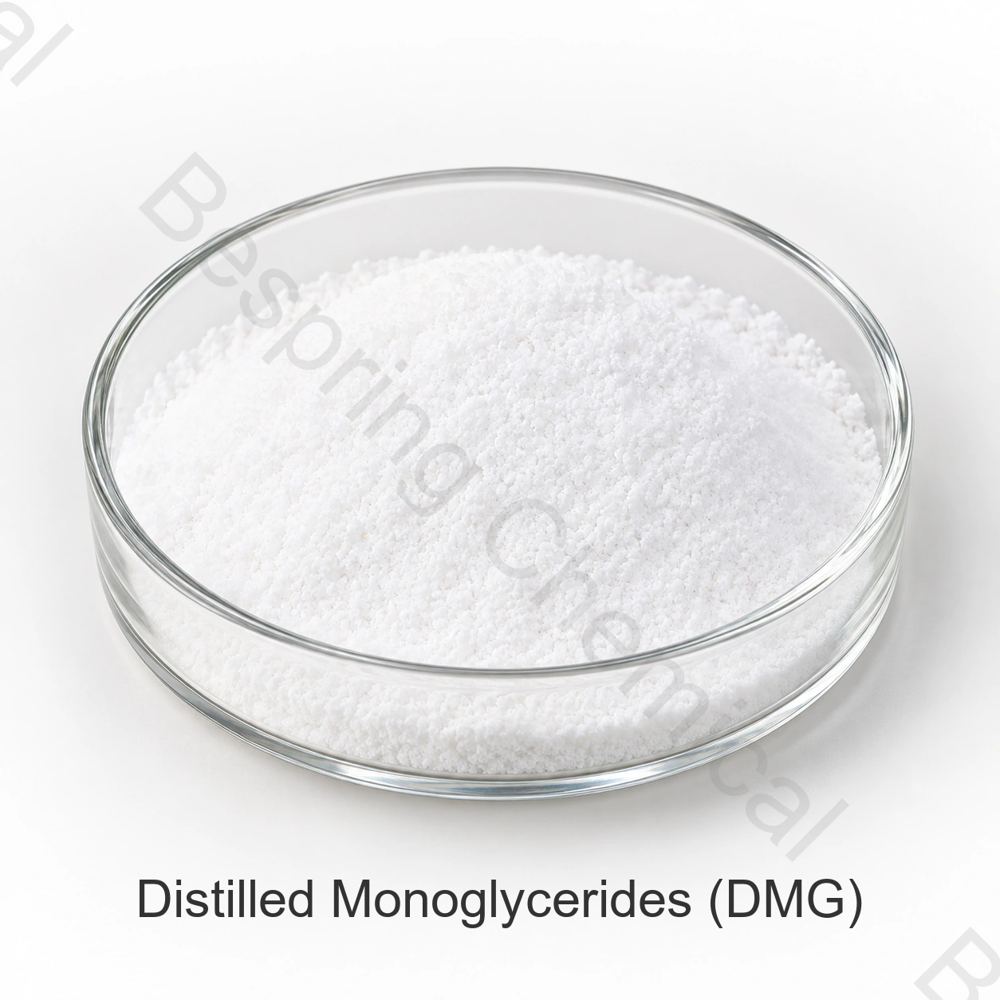

Phụ tùng và yêu cầu cung cấp
Ứng dụng quốc gia, mục tiêu đơn dạng, nguồn chất béo, hình thức, số lượng và đích đến.
Thành phần cấp thực phẩm là · Food emulseifier · DMG
Monoglycerid chưng cất là chất nhũ hóa monoglycerid đậm đặc sản xuất từ glycerid và axit béo cấp thực phẩm. DMG thuộc họ mono- và diglycerid của axit béo (INS 471), nhưng các cấp thương mại khác nhau về tỷ lệ monoglycerid, thành phần axit béo, nguồn gốc và dạng vật lý.

Hình minh họa sản phẩm · cấp chất lượng và quy cách đóng gói được nêu trong báo giá
Chia sẻ điểm số chính xác, ứng dụng, số lượng, đóng gói, điểm đến và những tài liệu cần thiết.
LớpĐiểm thực phẩm, theo chính xác về nguồn lực
Chi tiếtTài liệu hiện có từ bán hàng
Đang góiXác nhận trong đề nghị đặc biệt nguồn
Bằng chứng bantchCOA hiện thời sẵn sàng cho các gói cung cấp
Tổng quát sản phẩm
Monoglycerid chưng cất là chất nhũ hóa monoglycerid đậm đặc sản xuất từ glycerid và axit béo cấp thực phẩm. DMG thuộc họ mono- và diglycerid của axit béo (INS 471), nhưng các cấp thương mại khác nhau về tỷ lệ monoglycerid, thành phần axit béo, nguồn gốc và dạng vật lý.
Tính hợp tác thương mại phụ thuộc vào nguồn chính xác, chức năng dự định, quy trình thực phẩm và quy định về điểm đến, cân nhắc đặc điểm đặc trưng cho thứ tự của bạn và sử dụng một mẻ COA để chấp nhận.
Danh sách tiến trình
Hãy so sánh những quy định về cấp bậc, quy định ứng dụng và các điều khoản thương mại trước khi yêu cầu một mẫu hoặc đặt một mệnh lệnh.
Ứng dụng quốc gia, mục tiêu đơn dạng, nguồn chất béo, hình thức, số lượng và đích đến.
Yêu cầu các thành phần, phương pháp hiện tại, COA, SDS và các tài liệu điều chỉnh.
Cung cấp cho hệ thống bột, giai đoạn mỡ, quá trình, mềm mại hoặc khối lượng mục tiêu và thử nghiệm trên kệ.
Xác định chất béo và hệ thống protein, đồng hóa, tràn ngập, hồ sơ tan chảy và nhãn hiệu cần thiết.
Kiểm tra ứng dụng
Chọn ứng dụng cho phép trong thị trường đích và đánh giá hiệu suất trong thực phẩm hoàn tất.
Đánh giá các mảnh mềm, quản lý bột, khối lượng và lắp ráp hoàn chỉnh.
Sự ổn định của màn hình, sự mất ổn định của chất béo, hành vi tràn ngập và tan chảy.
Kết hợp kết tinh, hành vi trong nước và xử lý nhiệt độ.
Đủ điều kiện để phân tán, giao tiếp và phục hồi chức năng.
Chọn kỹ thuật
“ DMG, không phải là một tác phẩm duy nhất; đồng ý phương pháp thử nghiệm và mục tiêu trong đặc điểm sản phẩm được thỏa thuận.
Dầu và mức độ bão hòa ảnh hưởng đến hành vi tan chảy và ứng dụng.
Chọn bột, hạt, bông hoa hoặc một dạng khác để phân tán và phân tán.
Xác nhận thực vật, động vật, liên quan đến lòng bàn tay, dị ứng và xác thực với bằng chứng.
Tài liệu kỹ thuật
Liên hệ đội ngũ kinh doanh để nhận bản thông số kỹ thuật hiện hành theo nguồn cung hoặc tài liệu kỹ thuật (TDS), đồng thời xác nhận phiên bản, phương pháp thử và tiêu chí nghiệm thu đáp ứng yêu cầu mua hàng.
Yêu cầu các đặc điểm đặc trưng hoặc TDS, SDS, các phương pháp phân tích, đại diện COA và các COA hàng loạt.
Đối chiếu hồ sơ an toàn thực phẩm, xuất xứ, chất gây dị ứng và chứng nhận theo đúng cấp chất lượng và cơ sở. Nếu cần Halal hoặc Kosher, hãy nêu phạm vi và tổ chức cấp được chấp nhận.
ôn lại Cổ bản GSFA mono- và di dân (SS 471) ghi chépsau đó áp dụng các quy tắc thị trường đích hiện tại vào chính xác các thực phẩm hoàn thành.
Ghi chú tương thích: Liên quan đến danh tính quốc tế không phải tự mình cho phép mọi ứng dụng. Người mua có trách nhiệm xác nhận phân loại thực phẩm, sử dụng cấp độ, nhãn hiệu tuyên bố và những điều kiện khác trong mỗi thị trường đích.
Lưu trữ và xử lý
Hỏi người mua
Phân chia đơn chất lỏng là một loại đơn phân cách tập trung được tạo ra từ các phân tử thức ăn và chất béo. DMG nằm trong đơn- đơn và đào bới các chất axit béo (INS 471), nhưng điểm thương mại khác nhau tùy theo đơn dạng monoglyceride, hồ sơ chất béo và dạng vật lý. Đặc tả hiện thời ký hiệu cho nguồn cung cấp nguồn đã chọn.
Hỗn hợp được xác định theo thành phần ; Nhóm INS 471 ; Cấp monoglycerid chưng cất. Với nhóm sản phẩm và hỗn hợp, vui lòng nêu rõ thành phần cụ thể và toàn bộ công thức trong thư hỏi hàng. Hãy cho biết dạng thương mại, nồng độ, cấp sản phẩm và yêu cầu riêng đối với nguồn cung.
Vui lòng gửi cho đội ngũ của chúng tôi tên sản phẩm, cấp sản phẩm, ứng dụng và thị trường đích để yêu cầu bản thông số kỹ thuật hoặc tài liệu kỹ thuật (TDS) hiện hành của nguồn cung, phương pháp phân tích và phiếu kết quả phân tích (COA) tham khảo. Kết quả kiểm nghiệm của hàng giao được thể hiện trên COA của lô tương ứng.
Nêu rõ quy cách, SDS, COA theo lô cùng hồ sơ về xuất xứ, chất gây dị ứng hoặc chứng nhận cần đối chiếu. Kiểm tra phạm vi theo cấp chất lượng và cơ sở được đề xuất.
Cung cấp chính xác loại cấp hoặc loại, ứng dụng, hiệu suất quan trọng cần thiết, số lượng, đóng gói, điểm đến, giấy tờ cần thiết, định kỳ và yêu cầu ngày giao hàng.
Phụ tùng liên quan
Duyệt danh mục đầu tư đầy đủ và hồ sơ kỹ thuật có sẵn.
Thảo luận về đặc điểm sản phẩm, tài liệu, yêu cầu mẫu và thương mại.
Xem xét lại việc cung cấp và hỗ trợ xuất khẩu cho các thành phần quốc tế.
Tìm nguồn dựa trên chỉ tiêu kỹ thuật
Chia sẻ điểm hoặc loại chính xác, ứng dụng, yêu cầu hiệu suất quan trọng, số lượng, đóng gói, đích đến và danh sách tài liệu cho một đề xuất có liên quan.
Nếu không dùng được biểu mẫu, hãy dùng trang liên hệ. Bạn cũng có thể gửi email cho bộ phận kinh doanh.
Cho chúng tôi biết điểm số và điểm đến của anh để chúng tôi có thể xác nhận tài liệu nào có sẵn cho đơn đặt hàng của anh.
Một tham chiếu bên ngoài không phải là một chứng nhận hàng loạt hoặc một đặc điểm sản phẩm Bespring.